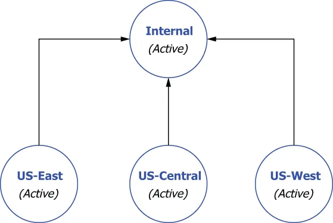

Assume we have three clusters all actively serving the GottaEat customers in their respective regions and a fourth Pulsar cluster named internal that is completely isolated from the web and only accessible by internal employees, and that is used to aggregate the data from all of the customer-serving Pulsar clusters, as shown in figure B.6. To implement aggregation geo-replication across these four clusters, you will need to use the commands shown in listing B.10, which first creates the E-payments tenant and grants access to all the clusters.
假设我们有三个集群，都在各自的区域内活跃地为 GottaEat 的客户提供服务；此外还有第四个名为 internal 的 Pulsar 集群，它与互联网完全隔离、只有内部员工可以访问，并且被用来聚合来自所有那些面向客户的 Pulsar 集群的数据，如图 B.6 所示。要在这四个集群之间实现聚合异地复制，你将需要使用清单 B.10 中所示的那些命令——它们首先创建 E-payments 这个租户，并授予其访问所有集群的权限。

Figure B.6 An aggregation geo-replication configuration to funnel messages from three customer-facing Pulsar clusters to an internal Pulsar cluster for aggregation and analysis
图 B.6 一种聚合异地复制配置：把消息从三个面向客户的 Pulsar 集群汇流到一个内部的 Pulsar 集群，以做聚合与分析。
Next, you will need to create a namespace for each of the customer services clusters (e.g., E-payments/us-east-payments). You cannot use one such as E-payments/ payments because that would lead to full mesh replication if you attempted to use it, since every cluster would have that namespace. Thus, a per-cluster namespace is required for this to work.
接下来，你需要为每一个客户服务集群各创建一个命名空间（例如 E-payments/us-east-payments）。你不能使用诸如 E-payments/payments 这样的一个命名空间——因为如果你试图使用它，由于每个集群都会拥有那个命名空间，就会导致全网状复制。因此，要让这种做法成立，就必须为每个集群各设一个命名空间。
Listing B.10 Aggregator geo-replication
/pulsar/bin/pulsar-admin tenants create E-payments \ ❶
--allowed-clusters us-west,us-east,us-central,internal
/pulsar/bin/pulsar-admin namespaces create E-payments/us-east-payments ❷
/pulsar/bin/pulsar-admin namespaces create E-payments/us-west-payments
/pulsar/bin/pulsar-admin namespaces create E-payments/us-central-payments
/pulsar/bin/pulsar-admin namespaces set-clusters \ ❸
E-payments/us-east-payments --clusters us-east,internal
/pulsar/bin/pulsar-admin namespaces set-clusters \ ❹
E-payments/us-west-payments --clusters us-west,internal
/pulsar/bin/pulsar-admin namespaces set-clusters \ ❺
E-payments/us-central-payments --clusters us-central,internal
❶ Create the global tenant for Payments.
❶ 为 Payments 创建那个全局租户。
❷ Create the cluster-specific namespaces.
❷ 创建各个集群专属的命名空间。
❸ Configure US-East to internal replication.
❸ 配置从 US-East 到 internal 的复制。
❹ Configure US-West to internal replication.
❹ 配置从 US-West 到 internal 的复制。
❺ Configure US-Central to internal replication.
❺ 配置从 US-Central 到 internal 的复制。
If you decide to implement this pattern and you intend to run identical copies of an application across all the customer-servicing cluster, be sure to make the topic name configurable so the application running on US-East knows to publish messages to topics inside the us-east-payments namespace. Otherwise, the replication will not work.
如果你决定实现这种模式，并且打算在所有那些面向客户的集群上运行同一个应用的相同副本，那么务必把主题名做成可配置的——这样运行在 US-East 上的那个应用才会知道要把消息发布到 us-east-payments 命名空间内的主题中。否则，复制将无法工作。